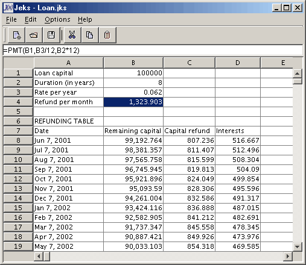

What is Jeks ?
What is JeksParser ?
Applet demos
Jeks contents
FAQ
History
What's next ?
Copyright and license
Javadoc documentation
Jeks feedback
Jeks is a JavaTM spreadsheet based on the SwingTM JTable component and the JeksParser library computing mathematical expressions.

Jeks provides numerous features among which :
- Edition of formulas in cells using a rich set of operators and functions.
- Edition of parameterized functions using expressions defined by users.
- Optimized calculation using a compiled version of formulas and functions.
- Checking of circular reference in formulas.
- Optimized update of formulas referencing other cells.
- Cut / Copy / Paste with automatic shift of cell references in formulas.
- Internationalization of the spreadsheet and of the syntax in formulas.
- Save / Open files at spreadsheet format.
- User's guide.
- Reusability : Your existing model of data or table can be easily enriched to include features of Jeks.
- Extensibility : As the component JTable, Jeks can be extended to include more features (cell attributes, charts,...).
Jeks provides more than a spreadsheet application :
- As a library, Jeks provides the Java classes that allow developers to add features of a spreadsheet to their own table.
- As an application, Jeks provides a model that helps developers to add a customizable spreadsheet component to their application.
- Based on the class JTable, Jeks provides a model of the extensibility of this Swing component.
- Using the library JeksParser, the Jeks implementation of formulas provides a model of the extensibility of this library.
Jeks is compliant with Java 1.1 and Swing 1.1.
Jeks weighs 196 Ko.
JeksParser is a Java library that parses, compiles and computes expressions and functions.
It can parse three different kinds of strings :
- Mathematical expressions operating on numbers, as a calculator does.
- Functions of the type function(parameters)=expression operating on parameters, where parameters is a list of parameters that the expression can use. Typically, this is used to define macros or functions that may be used in other expressions.
- Expressions of the type =expression operating on parameters, where the parameters in the expression are checked on the fly during the parsing. Typically, this is used to define formulas in a spreadsheet cell or column.
The parsed expression may contain a syntactically correct combination of :
- literal values (numbers, strings,...)
- constants (PI, E,...)
- parameters
- brackets
- unary operators (-, +,...)
- infixed binary operators (+, *, /, <,...)
- conditions (IF THEN ELSE or ternary operator ? :)
- predefined functions (sin, log,...)
- user functions previously parsed with JeksParser or written and compiled in Java.
The parsers are based upon classes that enable to choose the syntax and the implementation of the interpreter :
- The syntactic elements describe the language the expression must respect (PASCAL, Java,...).
- The interpreter implementation calculates the value of the expression to obtain different result types (double, wrapping class, MathML, BigDecimal, GMatrix,...).
Once an expression is correctly parsed by its automaton, the parser builds an internal tree matching the expression.
This tree speeds up the calculation of the expression with the value of its parameters.
JeksParser is provided with different kind of applets and application.
com.eteks.parser package files are compliant with Java 1.0 but needs a JDK 1.1 or higher library to compile (to enable the serialization of classes).
JeksParser library weighs 60 Ko.
|
|
|
|
(This applet with its user's guide may be found here) |
These applets use the JeksParser library.
Jeks library is supplied with :
- jeks.jar, jeksparser.jar, jekstools.jar and calculator.jar JAR libraries
- Java source files
- Javadoc documentation
- a FAQ list
- Jeks : a spreadsheet application.
- JeksCalculator : an applet/application that implements a calculator.
- JeksDisplay : an applet that displays one or two parameters functions with a 2D or 3D curve.
- JeksJavaPerformanceTest : an application used to compare the computing average speed of different functions parsed with JeksParser and their Java counterpart function with a speed meter dialog box.
All the applications and applets are in the bin subdirectory of Jeks.
In which cases should I use Jeks ?
Audience Problem Solution User You look for a calculator. Use the JeksCalculator application / applet.
You look for a Spreadsheet tool. Use Jeks.
Developer You look for a function/expression Java parser You want to compute simple expressions with numbers, operators and common functions (logarithmic and trigonometric). Use the com.eteks.parser.CalculatorParser class. You want to parse functions declared with 0 to n parameters, and then compute these functions according to the value of its parameters. Use the com.eteks.parser.FunctionParser class. You want to parse expressions whose parameters are detected on the fly (like column or cell names) and then compute these expressions according to the value of these parameters. Use the com.eteks.parser.ExpressionParser class and the com.eteks.parser.ExpressionParameter interface. You want to add computing capabilities to your tables Use the classes of Jeks.
What libraries do I have to add to classpath to use Jeks ?
As Jeks is a 100% Pure Java set of libraries, you just have to add the JAR files to Java classpath to use it. As Jeks is distributed with 4 .jar files (stored in the lib subdirectory of Jeks) you should know which one(s) to use :
- jeks.jar contains all the classes and resources to make run the Jeks spreadsheet application from one jar file (with the command java -jar jeks.jar). It contains all the classes of the com.eteks.jeks, com.eteks.parser packages and a few other tools classes and resources (images and properties files).
It's compatible with Java 1.1 but as it doesn't include Swing classes, it requires the Swing 1.1.1 library to be in CLASSPATH system variable (Swing is included in JDK version >= 1.2).- jeksparser.jar contains all the classes of the com.eteks.parser package with the basic parsers (com.eteks.parser.CalculatorParser, com.eteks.parser.FunctionParser and com.eteks.parser.ExpressionParser) and their relative classes and interfaces (com.eteks.parser.Syntax, com.eteks.parser.Interpreter,...). If you just need a customizable parser for your application, this library should be enough. It's compatible with Java 1.0 at runtime.
- jekstools.jar contains demo classes (JeksCalculator, JeksDisplay and JeksJavaPerformanceTest) and relative classes. You shouldn't need them for your own developments.
- calculator.jar contains the classes of com.eteks.parser and com.eteks.tools.calculator packages required to run the applet/application Calculator. This package was made to show how small could be an application using Jeks (calculator.jar is only 20 Ko in compressed mode).
Jeks is also distributed with the file jlfgr-1_0.jar that contains all the standard JFC icons used by the Jeks spreadsheet application (available at http://developer.java.sun.com/developer/techDocs/hi/repository/).
Finally, the MacOS classic version of Jeks is distributed with the files swing.jar and mac.jar to enable Jeks to run with MRJ.How fast is Jeks at interpretation time compared to Java compiled code ?
According to JeksJavaPerformanceTest application, it depends on what kind of parsed function and the version of the JDK you use. With JDK 1.3, functions using a lot of mathematical functions like logarithmic or trigonometric functions may be 4 times slower than the same Java function, and the use of some sub functions with recursive calls (to compute PMT () for example) may be 60 times slower.
Jeks is 100% Pure Java according to Sun JavaPureCheck tool test.
Version 1.0.2 01/23/2003
- Adapted the layout of JeksCalculator to MaxOS X.
- Changed the menu shortcut mask in Jeks to use the command key as shorcut mask on MacOS.
- Modified short syntax graph in com.eteks.parser.FunctionParser to correct the bug when a string using useless spaces like "2 * 2" threw a syntax error (only "2*2" or "2 2" didn't throw exceptions).
- getLiteralNumber () method of com.eteks.parser.AbstractSyntax bug : numbers starting with . were incorrectly parsed. This bug didn't affect the number parsing in Jeks. The spreadsheet application uses the Java parser available with java.text.NumberFormat.
- Changed in demos the order of parameters of the PMT function to be the same order as in the Excel function.
Version 1.0.1 10/24/2001
- getLiteralString () method of com.eteks.parser.JavaSyntax bug : fixed Java strings parsing.
- getLexical () method in parsers bug : moved getLiteral () to the end of getLexical () to give an higher priority to operators and avoid problems with signed literals.
Version 1.0 09/30/2001
Final release distributed under GNU General Public License.
Version 1.0 Beta 06/13/2001
First version.
You should notice that this product has already a long story at eTeks : the applet JeksDisplay was first a program written in C on AmigaOS in 1991 ! Translated in Java in 1998, a first version of the applet has been available at http://www.eteks.com/applets/displayfunction.html since that time.
Jeks spreadsheet could be extended to include these features :
- Open / Save other file formats (Excel/BIFF, DBF, XML,...)
- Printing
- Cell attributes (cell naming, number and text formats, borders, colors, fonts, alignment)
- More functions (database, statistics, finance, search)
- Display 2D and 3D graphs
- Undo / Redo
- Insert / delete rows and columns.
- Search / Replace
- Sort / Filter
- Tabbed multi sheets
- Help
At this moment the library JeksParser can operate on numbers and strings. This library can easily be extended to :
- Operate on more accurate numbers with the java.math.BigDecimal and java.math.BigInteger classes.
- Operate on vectors and matrices with the javax.vecmath.GVector and javax.vecmath.GMatrix classes.
- Operate on complex numbers.
- Compile expressions at MathML or other XML format.
JeksParser could also include the features that allow the calculation of complex operations like derivation or integrals and the simplification of expressions.
The components of the applet JeksDisplay that display 2D or 3D curves could be extended to include the following features :
- axes with values
- titles, comments
- different types of charts and pies and then be used in Jeks to display 2D and 3D graphs.
- better 3D results using the Java3D library.
The applet JeksCalculator could be extended to include more features for people who need a calculator on their web site.
These features will be added in future releases of Jeks and JeksParser according to the interest of people. If you have any suggestion about how Jeks should evolve, please send them to info@eteks.com or fill the Jeks feedback form.
Copyright © 1998-2001 Emmanuel PUYBARET / eTeks info@eteks.com. All Rights Reserved.
This program is free software; you can redistribute it and/or modify it under the terms of the GNU General Public License as published by the Free Software Foundation; either version 2 of the License, or (at your option) any later version.
This program is distributed in the hope that it will be useful, but WITHOUT ANY WARRANTY; without even the implied warranty of MERCHANTABILITY or FITNESS FOR A PARTICULAR PURPOSE. See the GNU General Public License for more details.
You should have received a copy of the GNU General Public License along with this program; if not, write to the Free Software Foundation, Inc., 59 Temple Place, Suite 330, Boston, MA 02111-1307 USAVisit eTeks web site for up-to-date versions of Jeks and other Java tools and tutorials : http://www.eteks.com/
Note that the GNU General Public License does not permit incorporating this software into proprietary programs.
If you are interested by Jeks or JeksParser for such use, please write to info@eteks.com to get information about the other available licenses that could meet your needs.eTeks and Jeks are registered trademarks.